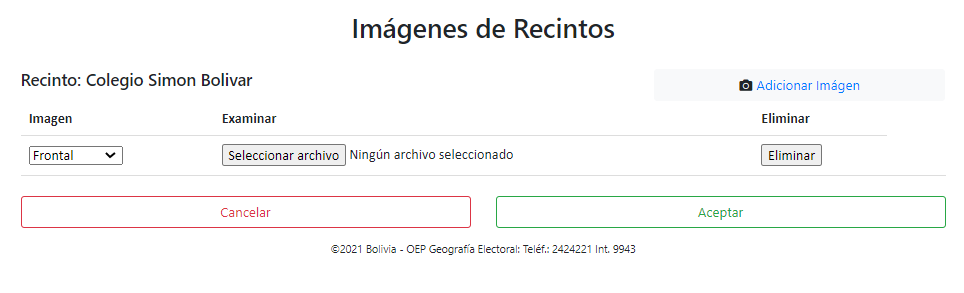
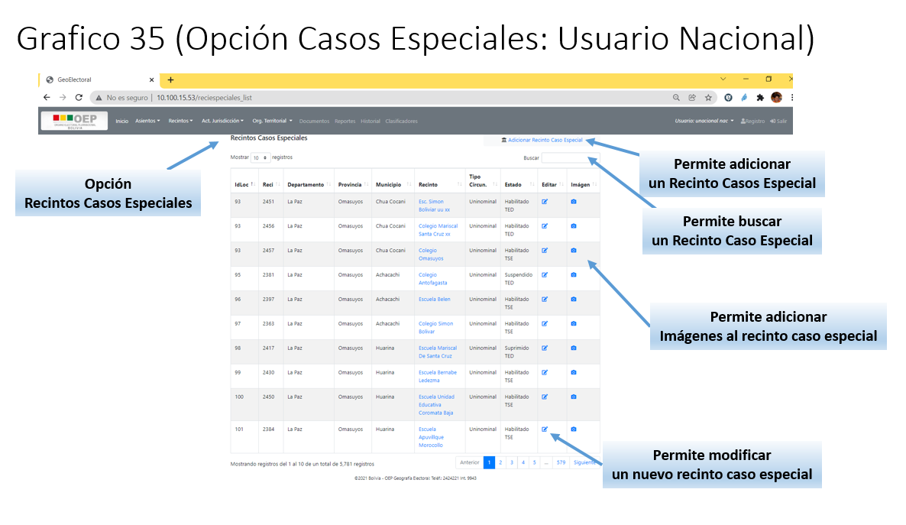

4. Opción Recintos
a. Usuario Nacional
El presente usuario tendrá activo las opciones: • Uninominales • Especiales (Indígenas) • Casos Especiales • Distritos • Zonas • Asignar Homologación • Listar Homologación • Visor Recintos/Asientos
{kind=link}
Opción Uninominales
A través de esta opción, se podrá adicionar, modificar, buscar recintos; a los recintos a su vez se les podrá agregar imágenes, que permitan establecer la ubicación exacta del recinto.
{kind=link}
Adicionar nuevo Recinto
A través de opción podrá registrar un nuevo Recinto.
Procedimiento para el Registro de un Nuevo Recinto:
Paso 1: Para el registro de un nuevo recinto, deberá primero llenar los campos de Latitud y Longitud (ejemplo: Latitud: -16.044027 Longitud: -68.68502), una vez digitado los datos, la aplicación automáticamente generara, en base a las coordenadas los datos del Departamento, Provincia y el Municipio.
Paso 2: A partir de la generación de los datos del Departamento, Provincia y Municipio, podrá presionar el botón Visualizar Imágen Satelital, para visualizar la imagen satelital del punto con las coordenadas Latitud y Longitud registradas.
Paso 3: Establecido el punto en la imagen satelital, se debe proceder a completar los datos de los campos restantes.
Paso 4: Se debe presionar el botón Ver Asientos/Zonas, para desplegar los asientos que existen en ese departamento, provincia y municipio, se debe seleccionar el asiento al cual asignar el recinto.
Paso 5: Una vez seleccionado el asiento, automáticamente se generaran las zonas de ese asiento, sino existiera la zona en dicho asiento se deberá adicionar la zona a través del botón Registrar.
Paso 6: Una vez presionado el botón Registrar, se desplegara el siguiente formulario donde se podrá registrar la nueva zona.
{kind=link}
Paso 7: Para el llenado de la zona, se presionar el botón Refresh, para actualizar la lista de distritos, sino existiera el distrito se deberá adicionar un nuevo distrito a través del botón Nuevo Distrito.
Paso 8: Una vez presionado el botón Nuevo Distrito, se desplegara el siguiente formulario,
{kind=link}
A través de este formulario de podrá registrar el nuevo distrito, registrando el campo “Nombre de Distrito”, para guardar el distrito se presionar en el botón Aceptar, una vez registrado en nuevo distrito, se debe presionar en el botón Cerrar, para cerrar el formulario de registro de distritos.
Paso 9: Una vez cerrado el formulario de registro de distrito, volverá al formulario de “Registro de Zonas y Distritos”, donde deberá de presionar nuevamente en botón Refresh, para actualizar la nueva lista de distritos.
Paso 10: Una vez llenado los datos de la nueva zona y el distrito al que pertenece se deberán registrar la nueva zona a través del boton Aceptar.
Paso 11: Una vez registrada la zona se cerrara automáticamente el formulario de “Registro de Zonas y Distritos”, una vez cerrado el formulario, se deberá nuevamente presionar el botón Ver Asientos/Zonas, seleccionar nuevamente el asiento que tendrá actualizada la lista de las zonas registradas anteriormente.
Paso 12: Llenado los datos del recinto a adicionar se debe proceder a presionar el botón Aceptar, para el registro del nuevo
recinto.
{kind=link}
Modificar (Editar) Recinto
A través de opción podrá modificar un Recinto.
Procedimiento para la Modificación de un Recinto:
Paso 1: Para modificar un recinto, deberá hacer click en el icono Editar, el cual le llevara al formulario de edición del recinto.
Paso 2: Dentro del formulario de edición del recinto, en primera instancia no le despliega la imagen satelital, para desplegar aquello deberá presiona en el botón Visualizar Imagen Satelital, esto le desplegara el punto (coordenadas latitud y longitud), donde se encuentra el recinto.
Paso 3: Una vez realizado los cambios a los diferentes datos del recinto se procederá a aceptar los cambios a través del botón Aceptar, el cual le permitirá guardar los cambios realizados en los datos del recinto.
Nota.- Si no requiere que se modifiquen los datos se deberá presionar en el botón Cancelar, para eliminar cualquier cambio realizado en el formulario de edición del recinto.
{kind=link}
Búsqueda de Recinto(s)
Esta opción le permitirá realizar búsqueda de manera selectiva, es decir la búsqueda se podrá realizar por cualquiera de las columnas desplegadas.
Procedimiento para la Búsqueda de un Recinto:
Paso 1: Para realizar la búsqueda de un determinado recinto u recintos deberá hacer click en el visor de búsqueda Buscar.
Paso 2: A través de este visor de búsqueda se podrá digitar en él, el parámetro por el cual se realizara la búsqueda.
{kind=link}
Adición de Imágenes en el Recinto
A través de esta opción se podrá adicionar imágenes (fotos), al recinto que permitan establecer la ubicación, panorámica, calles, plazas en la que se encuentra el recinto.
Procedimiento para la Adición de Imágenes a un Recinto:
Paso 1: Para realizar la adición de una imagen a un recinto deberá presionar en el icono Imagen, el cual le llevara al formulario de adición de imágenes.
{kind=link}
Paso 2: Una vez dentro de la adición de imágenes, para adicionar una imagen deberá presionar en el link Adición Imagen.
Paso 3: Este le habilitara la opciones que le permitirán elegir la posición (Imagen), archivo a seleccionar (Examinar).
{kind=link}
Paso 4: Una vez elegida las opciones de Imagen, Examinar, se deberá guardar el registro presionando el botón Aceptar, para adicionar la imagen al recinto, de esta manera se podrán adicionar una o varias imágenes al recinto.
Modificaćión de Imágenes en el Recinto
A través de esta opción se podrá modificar imágenes (fotos), al recinto que permitan establecer la ubicación, panorámica, calles, plazas en la que se encuentra el recinto.
Procedimiento para la Modificación de Imágenes a un Recinto:
Paso 1: Para realizar la modificación de una imagen de un recinto deberá presionar en el icono Imagen, el cual le llevara al formulario de modificación de imágenes.
Paso 2: Una vez dentro de la modificación de imágenes se podrá modificar tanto la Imagen, Examinar.
{kind=link}
Paso 3: Una vez realizado los cambios a la imagen se deberá presionar el botón Aceptar, para guardar todos los cambios realizados.
Nota.- Si no requiere que se modifiquen los datos se deberá presionar en el botón Cancelar, para eliminar cualquier cambio realizado en la imagen del recinto.
Opción Especiales (Indígenas)
a través de esta opción, se podrá adicionar, modificar, buscar recintos especiales; a los recintos especiales a su vez se les podrá agregar imágenes, que permitan establecer la ubicación exacta del asiento.
{kind=link}
Adicionar nuevo Recinto Especial
A través de opción podrá registrar un nuevo Recinto Especial.
Procedimiento para el Registro de un Nuevo Recinto Especial:
Paso 1: Para el registro de un nuevo recinto especial, deberá primero llenar los campos de Latitud y Longitud (ejemplo: Latitud: -16.044027 Longitud: -68.68502), una vez digitado los datos, la aplicación automáticamente generara, en base a las coordenadas los datos del Departamento, Provincia y/o el Municipio.
Paso 2: A partir de la generación de los datos del Departamento, Provincia y Municipio, podrá presionar el botón Visualizar Imagen Satelital, para visualizar la imagen satelital del punto con las coordenadas Latitud y Longitud registradas.
Paso 3: Establecido el punto en la imagen satelital, se debe proceder a completar los datos de los campos restantes.
Paso 4: Se debe llenar el campo de “Pueblos Indígenas”, para ello se presionar en el botón Ver Pueblos Indig., este desplegara una lista de todos los pueblos indígenas que corresponde al departamento, provincia y/o municipio.
Paso 5: Una vez llenado el campo “Pueblos Indígenas”, se debe presionar el botón Ver Asientos/Zonas, para desplegar los asientos que existen en ese departamento, provincia y/o municipio, se debe seleccionar el asiento al cual asignar el recinto especial.
Paso 6: Una vez seleccionado el asiento, automáticamente se generaran las zonas de ese asiento, sino existiera la zona en dicho asiento se deberá adicionar la zona a través del botón Registrar.
Paso 7: Una vez presionado el botón Registrar, se desplegara el siguiente formulario donde se podrá registrar la nueva zona.
Paso 8: Para el llenado de la zona, se presionar el botón Refresh, para actualizar la lista de distritos, sino existiera el distrito se deberá adicionar un nuevo distrito a través del botón Nuevo Distrito.
Paso 9: Una vez presionado el botón Nuevo Distrito, se desplegara el siguiente formulario,
A través de este formulario de podrá registrar el nuevo distrito, registrando el campo “Nombre de Distrito”, para guardar el distrito se presionar en el botón Aceptar, una vez registrado en nuevo distrito, se debe presionar en el botón Cerrar, para cerrar el formulario de registro de distritos.
Paso 10: Una vez cerrado el formulario de registro de distrito, volverá al formulario de “Registro de Zonas y Distritos”, donde deberá de presionar nuevamente en botón Refresh, para actualizar la nueva lista de distritos.
Paso 11: Una vez llenado los datos de la nueva zona y el distrito al que pertenece se deberán registrar la nueva zona a través del boton Aceptar.
Paso 12: Una vez registrada la zona se cerrara automáticamente el formulario de “Registro de Zonas y Distritos”, una vez cerrado el formulario, se deberá nuevamente presionar el botón Ver Asientos/Zonas, seleccionar nuevamente el asiento que tendrá actualizada la lista de las zonas registradas anteriormente.
Paso 13: Llenado los datos del recinto especial a adicionar se debe proceder a presionar el botón Aceptar, para el registro del nuevo recinto especial.
{kind=link}
Modificar (Editar) Recinto Especial
A través de opción podrá modificar un Recinto Especial.
Procedimiento para la Modificación de un Recinto Especial:
Paso 1: Para modificar un recinto especial, deberá hacer click en el icono Editar, el cual le llevara al formulario de edición del recinto especial.
Paso 2: Dentro del formulario de edición del recinto especial, en primera instancia no le despliega la imagen satelital, para desplegar aquello deberá presiona en el botón Visualizar Imagen Satelital, esto le desplegara el punto (coordenadas latitud y longitud), donde se encuentra el recinto especial.
Paso 3: Una vez realizado los cambios a los diferentes datos del recinto especial se procederá a aceptar los cambios a través del botón Aceptar, el cual le permitirá guardar los cambios realizados en los datos del recinto especial.
Nota.- Si no requiere que se modifiquen los datos se deberá presionar en el botón Cancelar, para eliminar cualquier cambio realizado en el formulario de edición del recinto especial.
{kind=link}
Búsqueda de Recinto(s) Especial
Esta opción le permitirá realizar búsqueda de manera selectiva, es decir la búsqueda se podrá realizar por cualquiera de las columnas desplegadas.
Procedimiento para la Búsqueda de un Recinto Especial:
Paso 1: Para realizar la búsqueda de un determinado recinto especial ó recintos especiales deberá hacer click en el visor de búsqueda Buscar.
Paso 2: A través de este visor de búsqueda se podrá digitar en él, el parámetro por el cual se realizara la búsqueda.
{kind=link}
Adición de Imágenes en el Recinto Especial
A través de esta opción se podrá adicionar imágenes (fotos), al recinto especial que permitan establecer la ubicación, panorámica, calles, plazas en la que se encuentra el recinto especial.
Procedimiento para la Adición de Imágenes a un Recinto Especial:
Paso 1: Para realizar la adición de una imagen a un recinto especial deberá presionar en el icono Imagen, el cual le llevara al formulario de adición de imágenes.
{kind=link}
Paso 2: Una vez dentro de la adición de imágenes, para adicionar una imagen deberá presionar en el link Adicionar Imagen.
Paso 3: Este le habilitara la opciones que le permitirán elegir la posición (Imagen), archivo a seleccionar (Examinar).
{kind=link}
Paso 4: Una vez elegida las opciones de Imagen, Examinar, se deberá guardar el registro presionando el botón Aceptar, para adicionar la imagen al recinto especial, de esta manera se podrán adicionar una o varias imágenes al recinto especial.
Modificación de Imágenes en el Recinto Especial
A través de esta opción se podrá modificar imágenes (fotos), del recinto especial que permitan establecer la ubicación, panorámica, calles, plazas en la que se encuentra el recinto especial.
Procedimiento para la Modificación de Imágenes a un Recinto Especial:
Paso 1: Para realizar la modificación de una imagen de un recinto especial deberá presionar en el icono Imagen, el cual le llevara al formulario de modificación de imágenes.
Paso 2: Una vez dentro de la modificación de imágenes se podrá modificar tanto la Imagen, Examinar.
{kind=link}
Paso 3: Una vez realizado los cambios a la imagen se deberá presionar el botón Aceptar, para guardar todos los cambios realizados.
Nota.- Si no requiere que se modifiquen los datos se deberá presionar en el botón Cancelar, para eliminar cualquier cambio realizado en la imagen del recinto especial.
Opción Casos Especiales
A través de esta opción, se podrá adicionar, modificar, buscar recintos casos especiales; a los recintos especiales a su vez se les podrá agregar imágenes, que permitan establecer la ubicación exacta del asiento.
{kind=link}
Adicionar nuevo Recinto Caso Especial
A través de opción podrá registrar un nuevo Recinto Caso Especial.
Procedimiento para el Registro de un Nuevo Recinto Caso Especial:
Paso 1: Para el registro de un nuevo recinto caso especial, deberá primero llenar los campos de Latitud y Longitud (ejemplo: Latitud: -16.044027 Longitud: -68.68502), una vez digitado los datos, la aplicación automáticamente generara, en base a las coordenadas los datos del Departamento, Provincia y/o el Municipio.
Paso 2: A partir de la generación de los datos del Departamento, Provincia y/o Municipio, podrá presionar el botón Visualizar Imagen Satelital, para visualizar la imagen satelital del punto con las coordenadas Latitud y Longitud registradas.
Paso 3: Establecido el punto en la imagen satelital, se debe proceder a completar los datos de los campos restantes.
Paso 4: Se debe presionar el botón Ver Asientos/Zonas, para desplegar los asientos casos especiales que existen en ese departamento, provincia y/o municipio, se debe seleccionar el asiento al cual asignar el recinto caso especial.
Paso 5: Una vez seleccionado el asiento, automáticamente se generaran las zonas de ese asiento, sino existiera la zona en dicho asiento se deberá adicionar la zona a través del botón Registrar.
Paso 6: Una vez presionado el botón Registrar, se desplegara el siguiente formulario donde se podrá registrar la nueva zona.
Paso 7: Para el llenado de la zona, se presionar el botón Refresh, para actualizar la lista de distritos, sino existiera el distrito se deberá adicionar un nuevo distrito a través del botón Nuevo Distrito.
Paso 8: Una vez presionado el botón Nuevo Distrito, se desplegara el siguiente formulario,
A través de este formulario de podrá registrar el nuevo distrito, registrando el campo “Nombre de Distrito”, para guardar el distrito se presionar en el botón Aceptar, una vez registrado en nuevo distrito, se debe presionar en el botón Cerrar, para cerrar el formulario de registro de distritos.
Paso 9: Una vez cerrado el formulario de registro de distrito, volverá al formulario de “Registro de Zonas y Distritos”, donde deberá de presionar nuevamente en botón Refresh, para actualizar la nueva lista de distritos.
Paso 10: Una vez llenado los datos de la nueva zona y el distrito al que pertenece se deberán registrar la nueva zona a través del boton Aceptar.
Paso 11: Una vez registrada la zona se cerrara automáticamente el formulario de “Registro de Zonas y Distritos”, una vez cerrado el formulario, se deberá nuevamente presionar el botón Ver Asientos/Zonas, seleccionar nuevamente el asiento que tendrá actualizada la lista de las zonas registradas anteriormente.
Paso 12: Llenado los datos del recinto a adicionar se debe proceder a presionar el botón Aceptar, para el registro del nuevo
Recinto caso especial.
{kind=link}
Modificar (Editar) Recinto Caso Especial
A través de opción podrá modificar un Recinto Caso Especial.
Procedimiento para la Modificación de un Recinto Caso Especial:
Paso 1: Para modificar un recinto caso especial, deberá hacer click en el icono Editar, el cual le llevara al formulario de edición del recinto caso especial.
Paso 2: Dentro del formulario de edición del recinto caso especial, en primera instancia no le despliega la imagen satelital, para desplegar aquello deberá presiona en el botón Visualizar Imagen Satelital, esto le desplegara el punto (coordenadas latitud y longitud), donde se encuentra el recinto caso especial.
Paso 3: Una vez realizado los cambios a los diferentes datos del recinto caso especial se procederá a aceptar los cambios a través del botón Aceptar, el cual le permitirá guardar los cambios realizados en los datos del recinto caso especial.
Nota.- Si no requiere que se modifiquen los datos se deberá presionar en el botón Cancelar, para eliminar cualquier cambio realizado en el formulario de edición del recinto caso especial.
{kind=link}
Búsqueda de Recinto(s) Caso Especial
Esta opción le permitirá realizar búsqueda de manera selectiva, es decir la búsqueda se podrá realizar por cualquiera de las columnas desplegadas.
Procedimiento para la Búsqueda de un Recinto Caso Especial:
Paso 1: Para realizar la búsqueda de un determinado recinto caso especial ó recintos casos especiales deberá hacer click en el visor de búsqueda Buscar.
Paso 2: A través de este visor de búsqueda se podrá digitar en él, el parámetro por el cual se realizara la búsqueda.
{kind=link}
Adición de Imágenes en el Recinto Caso Especial
A través de esta opción se podrá adicionar imágenes (fotos), al recinto caso especial que permitan establecer la ubicación, panorámica, calles, plazas en la que se encuentra el recinto caso especial.
Procedimiento para la Adición de Imágenes a un Recinto Caso Especial:
Paso 1: Para realizar la adición de una imagen a un recinto caso especial deberá presionar en el icono Imagen, el cual le llevara al formulario de adición de imágenes.
{kind=link}
Paso 2: Una vez dentro de la adición de imágenes, para adicionar una imagen deberá presionar en el link Adicionar Imagen.
Paso 3: Este le habilitara la opciones que le permitirán elegir la posición (Imagen), archivo a seleccionar (Examinar).
{kind=link}
Paso 4: Una vez elegida las opciones de Imagen, Examinar, se deberá guardar el registro presionando el botón Aceptar, para adicionar la imagen al recinto caso especial, de esta manera se podrán adicionar una o varias imágenes al recinto caso especial.
Modificación de Imágenes en el Recinto Caso Especial
A través de esta opción se podrá modificar imágenes (fotos), al recinto caso especial que permitan establecer la ubicación, panorámica, calles, plazas en la que se encuentra el recinto caso especial.
Procedimiento para la Modificación de Imágenes a un Recinto Caso Especial:
Paso 1: Para realizar la modificación de una imagen de un recinto caso especial deberá presionar en el icono Imagen, el cual le llevara al formulario de modificación de imágenes.
Paso 2: Una vez dentro de la modificación de imágenes se podrá modificar tanto la Imagen, Examinar.
{kind=link}
Paso 3: Una vez realizado los cambios a la imagen se deberá presionar el botón Aceptar, para guardar todos los cambios realizados.
Nota.- Si no requiere que se modifiquen los datos se deberá presionar en el botón Cancelar, para eliminar cualquier cambio realizado en la imagen del recinto caso especial.
Opción Distritos
A través de esta opción, se podrá adicionar, modificar, buscar distritos.

Adicionar nuevo Distrito
A través de opción podrá registrar un nuevo Distrito.
Procedimiento para el Registro de un Nuevo Distrito:
Paso 1: Para el registro de un nuevo distrito, deberá saber el código del IdLoc (código del asiento), al cual asociar el nuevo distrito, se debe escribir el código en el campo IdLoc, luego se debe presionar la tecla “TAB” ó “Tabulador”, este automáticamente generara el nombre del asiento asociado a ese código.
Paso 2: También para llenar el campo “Circun”, se debe conocer la o las circunscripciones a las que pertenece el asiento, conocido el número de circunscripción se debe llenar los campos “Circun” y “Nombre de Distrito”.
Paso3: Una vez registrado todos los datos se debe presionar en el botón Aceptar, para registrar el nuevo distrito.
{kind=link}
Modificar Distrito
A través de opción podrá modificar un Distrito.
Procedimiento para la Modificación de un Distrito:
Paso 1: Para modificar un recinto caso especial, deberá hacer click en el icono Editar, el cual le llevara al formulario de modificación del Distrito.
Paso 2: Dentro del formulario de modificación del distrito, por integridad de datos, solo se podrá modificar los campos “Circun” y “Nombre del Distrito” .
Paso 3: Una vez realizado los cambios a los datos del distrito se procederá a aceptar los cambios a través del botón Aceptar, el cual le permitirá guardar los cambios realizados en los datos del distrito.
Nota.- Si no requiere que se modifiquen los datos se deberá presionar en el botón Cancelar, para eliminar cualquier cambio realizado en el formulario de modificación del Distrito.
{kind=link}
Búsqueda de Distrito(s)
Esta opción le permitirá realizar búsqueda de manera selectiva, es decir la búsqueda se podrá realizar por cualquiera de las columnas desplegadas.
Procedimiento para la Búsqueda de un Distrito:
Paso 1: Para realizar la búsqueda de un determinado distrito ó distritos deberá hacer click en el visor de búsqueda Buscar.
Paso 2: A través de este visor de búsqueda se podrá digitar en él, el parámetro por el cual se realizara la búsqueda.

Opción Zonas
A través de esta opción, se podrá adicionar, modificar, buscar zonas.
{kind=link}
Adicionar nueva Zona
A través de opción podrá registrar una nueva Zona.
Procedimiento para el Registro de una Nueva Zona:
Paso 1: Para el registro de una nueva zona, deberá saber el código del IdLoc (código del asiento), al cual asociar la nueva zona, se debe escribir el código en el campo IdLoc, luego se debe presionar la tecla “TAB” ó “Tabulador”, este automáticamente generara el nombre del asiento asociado a ese código.
Paso 2: En función al codigo IdLoc, se generar automáticamente los distritos pertenecientes al asiento.
Paso 3: Una vez seleccionado el campo “Nombre de Distrito”, se deberá llenar el campo “Nombre de la Zona”.
Paso 4: Una vez registrado todos los datos se debe presionar en el botón Aceptar, para registrar la nueva zona.
{kind=link}
Modificar Zona
A través de opción podrá modificar una Zona.
Procedimiento para la Modificación de una Zona:
Paso 1: Para modificar un recinto caso especial, deberá hacer click en el icono Editar, el cual le llevara al formulario de modificación de la Zona.
Paso 2: Dentro del formulario de modificación de la zona, por integridad de datos, solo se podrá modificar los campos “Nombre del Distrito” y “Nombre de la Zona”.
Paso 3: Una vez realizado los cambios a los datos de la zona se procederá a aceptar los cambios a través del botón Aceptar, el cual le permitirá guardar los cambios realizados en los datos de la zona.
Nota.- Si no requiere que se modifiquen los datos se deberá presionar en el botón Cancelar, para eliminar cualquier cambio realizado en el formulario de modificación de la Zona.
{kind=link}
Búsqueda de Zona(s)
Esta opción le permitirá realizar búsqueda de manera selectiva, es decir la búsqueda se podrá realizar por cualquiera de las columnas desplegadas.
Procedimiento para la Búsqueda de una Zona:
Paso 1: Para realizar la búsqueda de una determinada zona ó zonas deberá hacer click en el visor de búsqueda Buscar.
Paso 2: A través de este visor de búsqueda se podrá digitar en él, el parámetro por el cual se realizara la búsqueda.
{kind=link}
Opción Asignar Homologación
A través de esta opción, se podrá realizar la homologación de recintos cuyo campo “Estado” se encuentre en “Suprimido o Suspendido TED”, “Suprimido o Suspendido TSE”.
Asignar Homologación
A través de opción podrá realizar la homologación de recintos.

Procedimiento para Realizar la Homologación:
Paso 1: Para realizar la homologación, debe introducir la fecha de inicio y la fecha final, a continuación presionar el botón Buscar, esto le mostrara el listado de todos los recintos homologados ó a ser homologados, que están en el periodo de búsqueda.
{kind=link}
Paso 2: De la lista desplegada se debe presionar en la columna “Acción” el botón Asignar, este le llevara al siguiente formulario,
{kind=link}
Paso 3: En el presente formulario se desplegara el recinto a ser homologado y el/los recinto(s) al cual homologar que pertenecen a un determinado asiento.
Paso 4: Se debe seleccionar el recinto al cual se desea homologar a través del botón Asignar, una vez seleccionado el recinto se debe presionar en el botón Asignar, esto registrara la homologación realizada.
Modificar Homologación
A través de opción podrá modificar la asignación de una homologación.
Procedimiento para la Modificación de una Homologación:
Paso 1: Para realizar la modificación de una homologación, se debe introducir la fecha de inicio y la fecha final, a continuación presionar el botón Buscar, esto le mostrara el listado de todos los recintos homologados ó a ser homologados, que están en el periodo de búsqueda.
{kind=link}
Paso 2: Una vez desplegado el listado de los recintos homologado ó a ser homologados que están en el periodo de búsqueda, se debe presionar en el boton Modificar, en el recinto a modificar la homologación.
Paso 3: Esto le desplegara en siguiente formulario,
{kind=link}
Paso 4: En el presente formulario se deberá seleccionar el nuevo recinto al cual se debe realizar la modificación, una vez seleccionado el nuevo recinto se debe presionar en el boton Asignar, para confirmar la modificación, caso contrario si no se desea realizar la modificación se deberá presionar el boton Volver, para no aceptar la modificación.
Nota.- Cabe mencionar, que solo se puede realizar la homologación de recintos en asientos que tengan más de un (1) recinto, caso contrario no será posible.
Opción Listar Homologación
A través de esta opción, se podrá listar todas las homologaciones realizadas en un determinado periodo, se considera también homologaciones a los cambios de jurisdicción realizadas a los recintos.
A partir del listado de homologaciones se genera reportes en formato Excel.
{kind=link}
Listar Homologación
A través de opción podrá realizar el listado de homologaciones.
Procedimiento para Realizar el Listado de Homologaciones:
Paso 1: Para realizar el listado de homologaciones, debe introducir la fecha de inicio y la fecha final, a continuación presionar el botón Buscar, esto le mostrara el listado de todas las homologaciones, que están en el periodo de búsqueda.
{kind=link}
Paso 2: De la lista desplegada se debe presionar en la columna “Acción” el botón Busqueda, este le llevara al siguiente formulario,
{kind=link}
Paso 3: En el presente formulario se despliega los datos del Recinto Homologado Origen y el Recinto Destino, al principio no se despliega la imagen georeferenciada, para lograr aquello se debe presionar en el botón Visualizar Imagen Satelital.
Paso 4: Para abandonar el presente formulario se debe presionar en el botón Volver.
Reporte EXCEL
A través de opción podrá generar reportes en Excel, a partir del periodo de búsqueda.
Procedimiento para generar Reportes en EXCEL:
Paso 1: Para realizar el reporte en Excel, se debe introducir la fecha de inicio y la fecha final, a continuación presionar el botón Buscar, esto le mostrara el listado de todas las homologaciones, que están en el periodo de búsqueda.
Paso 2: Una vez desplegado el listado de las homologaciones que están en el periodo de búsqueda, se debe presionar en el boton Exportar a Excel.
Paso 3: Esto le generara un archivo en formato EXCEL,
{kind=link}
Opción Visor de Recintos/Asientos
A través de esta opción, se podrá visualizar Asientos y Recintos de manera Geo Referenciada.
{kind=link}
b. Usuario Departamental
El presente usuario tendrá activo las opciones:
{kind=link}
Uninominales
Especiales (Indígenas)
Distritos
Zonas
Asignar Homologación
Listar Homologación
Visor Recintos/Asientos
Opción Uninominales
A través de esta opción, se podrá adicionar, modificar, buscar recintos del departamento con el cual se logeo el usuario TED; a los recintos a su vez se les podrá agregar imágenes, que permitan establecer la ubicación exacta del asiento.
Nota.- Todas las operaciones que se realizan en la presente opción son similares al del usuario TSE, solo que estas acciones están orientadas a los permisos asignados a los usuarios TED.
Opción Especiales (Indígenas)
A través de esta opción, se podrá adicionar, modificar, buscar recintos especiales del departamento con el cual se logeo el usuario TED; a los recintos especiales a su vez se les podrá agregar imágenes, que permitan establecer la ubicación exacta del asiento.
Nota.- Todas las operaciones que se realizan en la presente opción son similares al del usuario TSE, solo que estas acciones están orientadas a los permisos asignados a los usuarios TED.
Opción Distritos
A través de esta opción, se podrá adicionar, modificar, buscar distritos del departamento con el cual se logeo el usuario TED.
Nota.- Todas las operaciones que se realizan en la presente opción son similares al del usuario TSE, solo que estas acciones están orientadas a los permisos asignados a los usuarios TED.
Opción Zonas
A través de esta opción, se podrá adicionar, modificar, buscar zonas del departamento con el cual se logeo el usuario TED.
Nota.- Todas las operaciones que se realizan en la presente opción son similares al del usuario TSE, solo que estas acciones están orientadas a los permisos asignados a los usuarios TED.
Opción Asignar Homologación
A través de esta opción, se podrá realizar la homologación de recintos cuyo campo “Estado” se encuentre en “Suprimido o Suspendido TED”.
Nota.- Todas las operaciones que se realizan en la presente opción son similares al del usuario TSE, solo que estas acciones están orientadas a los permisos asignados a los usuarios TED.
Opción Listar Homologación
A través de esta opción, se podrá listar todas las homologaciones realizadas en un determinado periodo del departamento con el cual se logeo el usuario TED, se considera también homologaciones a los cambios de jurisdicción realizadas a los recintos.
A partir del listado de homologaciones se genera reportes en formato Excel.
Nota.- Todas las operaciones que se realizan en la presente opción son similares al del usuario TSE, solo que estas acciones están orientadas a los permisos asignados a los usuarios TED.
Opción Visor de Recintos/Asientos
A través de esta opción, se podrá visualizar Asientos y Recintos de manera Geo Referenciada del departamento con el cual se logeo el usuario TED.
Nota.- Todas las operaciones que se realizan en la presente opción son similares al del usuario TSE, solo que estas acciones están orientadas a los permisos asignados a los usuarios TED.